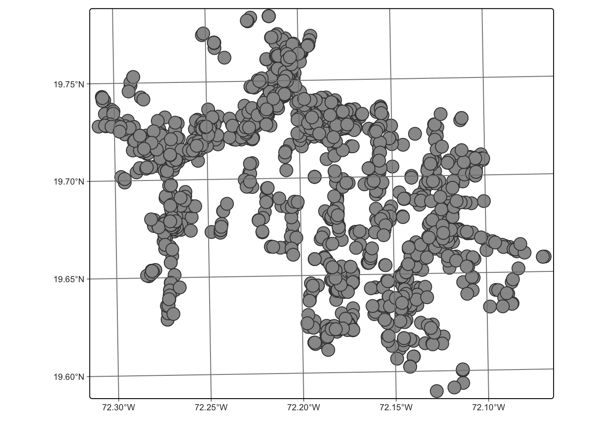
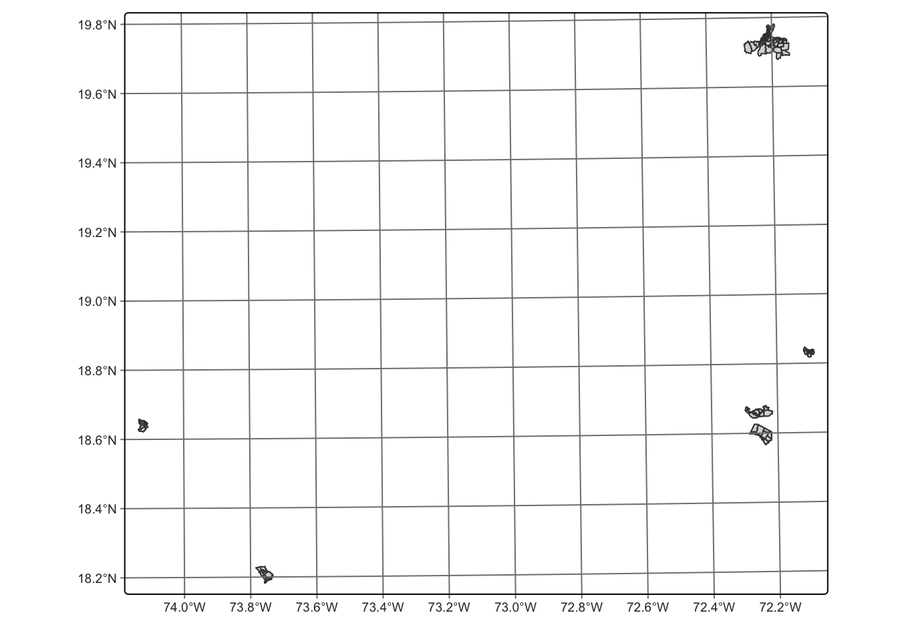
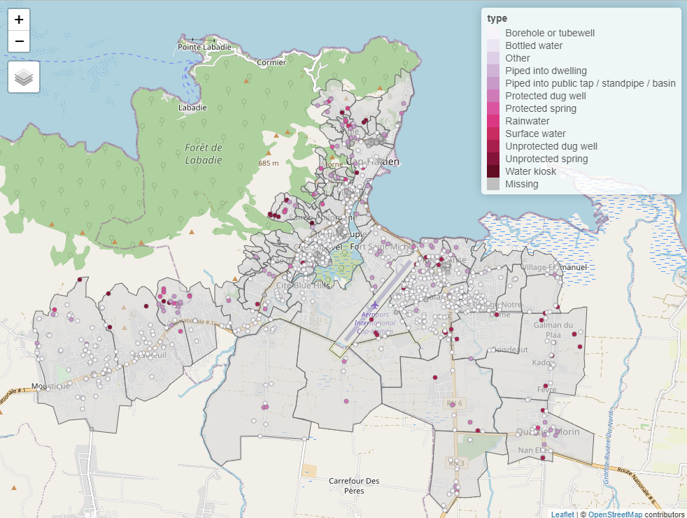

The goal of cbssuitabilityhaiti is to provide datasets for research and planning of water and solid waste management in Cap Haïtien, Haiti. This package combines datasets collected as part of two different projects. The package includes geospatial data about the locations of water access points and data from a sanitation zoning report for the municipality of Cap Haïtien.
Installation
You can install the development version of cbssuitabilityhaiti from GitHub with:
# install.packages("devtools")
devtools::install_github("openwashdata/cbssuitabilityhaiti")Alternatively, you can download the individual datasets as a CSV or XLSX file from the table below.
| dataset | CSV | XLSX |
|---|---|---|
| okap | Download CSV | Download XLSX |
| mwater | Download CSV | Download XLSX |
Datasets
This data package has two datasets, mwater and okap.
mwater
Water point data for the city of Cap Haitien, Haiti. The data collection and characterization was done between 2015 and 2022.
The mwater data set has 7 variables and 1849 observations. For an overview of the variable names, see the following table.
mwater | variable_name | variable_type | description |
|---|---|---|
| latitude | double | Lattitude coordinate |
| longitude | double | Longitude coordinate |
| administra | character | Communal section- smallest administrative unit in Haiti |
| type | character | Type of water access point |
| date_added | double | Date water access point was added to mWater |
| datasets | character | Dataset in mWater that point is part of, including organizaiton that is responsible for data |
| geometry | list | Geospatial data of the different access points that were added to mWater |
Below is a map of the water points in this dataset.

Locations of water access points in this dataset
Projet Eau et Assainissement de l’USAID
Sanitation zoning assessment for the Cap Haïtien, Haiti region.
Description
The study, based on three basic criteria (physical, urban characteristics and socioeconomic constraints of the zones), divides the Cap-Haïtien metropolitan area into homogeneous zones in order to propose adapted sanitation solutions for each zone based on a set of predefined criteria.
Data
This data includes data from a sanitation zoning report done for the city of Cap Haïtien, Haiti in 2022. Additionally, it contains spatial data about the neighborhoods of Cap Haïtien and five other communes in Haiti (Canaan, Croix-des-Bouquets, Jérémie, Les Cayes, Mirebalais). The attribute table includes data on population density, socioeconomic status, suitability of pit latrines, and suggested sewage construction priority zones.
These data were developed under the USAID Water and Sanitation Project in collaboration with the Cap-Haitian municipal government and DINEPA. These data do not reflect the opinion of USAID or the US Government.
The okap data set has 13 variables and 198 observations. For an overview of the variable names, see the following table.
okap| variable_name | variable_type | description |
|---|---|---|
| neighborho | double | Unique identifying number for each neighborhood unit |
| name | character | Name of each nieghborhood unit |
| sup_km2 | double | Area of neighborhood in square km |
| cte | character | Name of commune (administrative unit in Haiti) |
| economy | character | Categorical socioeconomic status (low, medium) |
| sup_bati_km2 | double | area of neihborhood covered by buildings in square kilometers |
| density | integer | Categorical population density (least dense, somewhat dense, dense, very dense, most dense) |
| aptitude | character | suitability of the site for a wastewater treatment system |
| zoning | character | “group” if collective or grouped sanitation is possible in short term. |
| latrine | character | Suggested pit latrine and septic allowance (allowed, not allowed) |
| density_ra | double | Catgoriccal population density according to the description of the variable “density” (values from 1 to 5) |
| economy_nu | double | Categotical socioeconomic status according to the description of the variable “economy” (1 = medium, 2 = low) |
| geometry | list | Geospatial data of the neighborhood stored as a polygon |

Examples
The code below is an example which shows how you could use the data to prepare a map in R. Find this and more examples in the prepared examples article (vignette("examples")).
library(cbssuitabilityhaiti)
library(tidyverse)
library(sf)
library(tmap)
## create an interactive map for cap haitien
# set mapping mode to interactive ("view")
tmap_mode("view")
# create first map layer: neighborhood areas
tm_shape(filter(okap, cte == "ctecaphaitien")) +
tm_borders() +
tm_fill(alpha = 0.6) +
# create second map layer: locations and type of the water points
tm_shape(drop_na(st_join(mwater, okap), neighborho)) +
tm_dots(col = "type", palette = "PuRd")
Screenshot of the an interactive map with OpenStreetMap layer.
License
Data are available as CC-BY.
Citation
Please cite using:
citation("cbssuitabilityhaiti")
#> To cite package 'cbssuitabilityhaiti' in publications use:
#>
#> Loos S, Kramer S, Lubeck-Schricker M (2023). "cbssuitabilityhaiti:
#> Sanitation Zoning and Water Points, Cap Haitien, Haiti 2015-2022."
#> doi:10.5281/zenodo.8361084 <https://doi.org/10.5281/zenodo.8361084>.
#> <https://github.com/openwashdata/cbssuitabilityhaiti>.
#>
#> A BibTeX entry for LaTeX users is
#>
#> @Misc{loos_etall:2023,
#> title = {cbssuitabilityhaiti: Sanitation Zoning and Water Points, Cap Haitien, Haiti 2015-2022},
#> author = {Sebastian Camilo Loos and Sasha Kramer and Maya Lubeck-Schricker},
#> year = {2023},
#> doi = {10.5281/zenodo.8361084},
#> url = {https://github.com/openwashdata/cbssuitabilityhaiti},
#> abstract = {This package contains data for a sanitation zoning assessment of Cap Haitien, Haiti, used for an analysis of the suitability of container-based sanitation (CBS). It combines two datasets: neighbourhood level zoning data from a 2022 sanitation zoning assessment, covering Cap Haitien and five other communes in Haiti, and the locations of 1849 water points in the Cap Haitien area from the mWater platform, added between 2015 and 2022.},
#> keywords = {open data,washdata,sanitation,sanitation zoning,container-based sanitation,water points,urban planning,Cap Haitien,Haiti,central-america,container-based-sanitation,haiti,open-data,open-datasets,r,suitability-analysis,wash},
#> version = {0.0.1},
#> }Additional data use information
Anyone interested in publishing the data:
- Sanitation zoning assessment data (
okap) should be attributed with “These data were developed under the USAID Water and Sanitation Project in collaboration with the Cap-Haitian municipal government and DINEPA. These data do not reflect the opinion of USAID or the US Government.”